En este ejercicio practicarás los comandos básicos de Git creando y versionando un pequeño programa en C que suma dos números. Aplicarás todos los comandos que has aprendido en este nivel.
Vas a crear un programa en C compuesto por:
Luego usarás Git para versionarlos y ver cómo funciona el control de versiones.
Crea un archivo llamado suma.h con el siguiente contenido:
#ifndef SUMA_H
#define SUMA_H
int suma(int a, int b);
#endif
Crea un archivo llamado suma.c con el siguiente contenido:
#include "suma.h"
int suma(int a, int b) {
return a + b;
}
Crea un archivo llamado main.c con el siguiente contenido:
#include <stdio.h>
#include "suma.h"
int main() {
int numero1 = 5;
int numero2 = 3;
int resultado = suma(numero1, numero2);
printf("La suma de %d + %d = %d\n", numero1, numero2, resultado);
return 0;
}
Crea un archivo llamado Makefile (sin extensión) para automatizar la compilación:
CC=gcc
CFLAGS=-Wall -Wextra
TARGET=suma
SOURCES=main.c suma.c
OBJECTS=$(SOURCES:.c=.o)
all: $(TARGET)
$(TARGET): $(OBJECTS)
$(CC) $(CFLAGS) -o $@ $^
%.o: %.c
$(CC) $(CFLAGS) -c -o $@ $<
clean:
rm -f $(OBJECTS) $(TARGET)
.PHONY: all clean
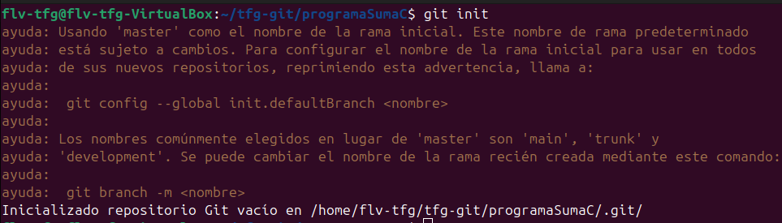
Abre la terminal en la carpeta donde creaste los archivos y ejecuta:
git init
Esto creará un repositorio Git local. Deberías ver un mensaje indicando que se creó la carpeta .git.
Crea un archivo .gitignore para evitar que archivos innecesarios se suban a Git:
# Archivos compilados
*.o
*.exe
*.out
# Archivos del sistema
.DS_Store
# IDEs
.vscode/
.idea/
Esto asegura que solo versionaremos el código fuente, no los archivos compilados.
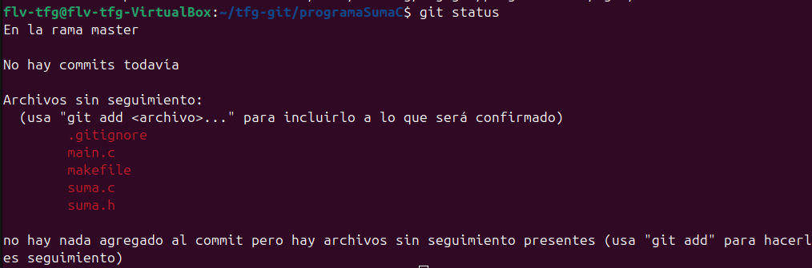
Ejecuta el siguiente comando para ver qué archivos están sin rastrear:
git status
Deberías ver los archivos .c, .h, .gitignore y Makefile en la lista de archivos sin rastrear (sin tracked).
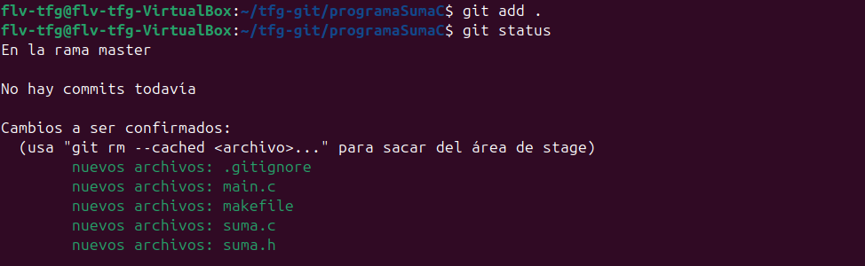
Ahora añade todos los archivos al Staging Area:
git add .
Verifica que se han añadido correctamente:
git status
Ahora deberías ver los archivos en verde, listos para hacer commit.
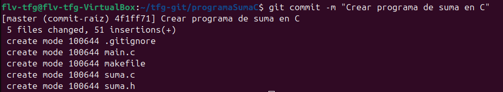
Guarda los cambios en el historial de Git con un mensaje descriptivo:
git commit -m "Crear programa de suma en C"
Has creado tu primer punto de control en el historial. Ahora puedes volver a este estado en cualquier momento.
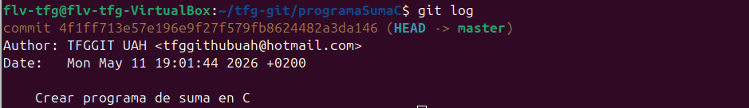
Ve el historial de commits realizados:
git log
Deberías ver tu commit con la fecha, el autor y el mensaje.
Abre main.c y cambia los números que se suman:
#include <stdio.h>
#include "suma.h"
int main() {
int numero1 = 10; // Cambiado de 5 a 10
int numero2 = 7; // Cambiado de 3 a 7
int resultado = suma(numero1, numero2);
printf("La suma de %d + %d = %d\n", numero1, numero2, resultado);
return 0;
}
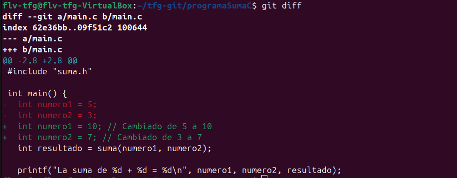
Usa el comando diff para ver exactamente qué cambió:
git diff
Verás las líneas eliminadas (en rojo) y las nuevas (en verde). Esto te ayuda a revisar cambios antes de hacer commit.
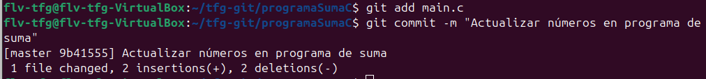
Añade los cambios al Staging Area:
git add main.c
Haz un nuevo commit con un mensaje descriptivo:
git commit -m "Actualizar números en programa de suma"
Ahora tienes dos commits en el historial.
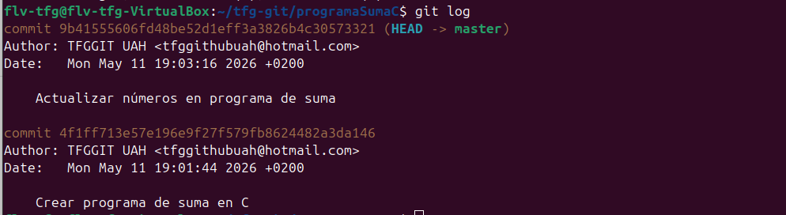
Ejecuta nuevamente git log para ver ambos commits:
git log
Notarás que los commits están ordenados del más reciente al más antiguo.
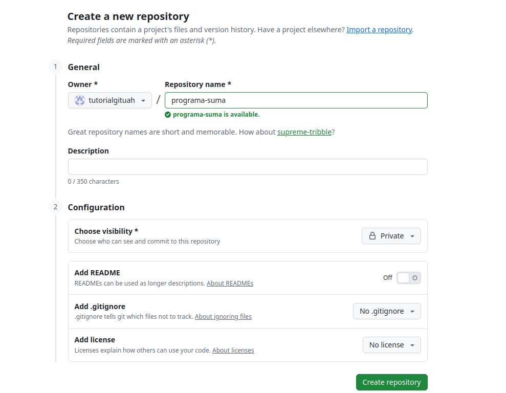
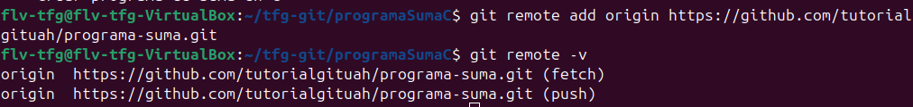
Ve a https://github.com/new y crea un nuevo repositorio con el nombre programa-suma. No añadas README, .gitignore ni licencia por ahora (ya tenemos lo necesario).
Una vez creado el repositorio en GitHub, verás instrucciones. En tu terminal local, ejecuta:
git remote add origin https://github.com/tu-usuario/programa-suma.git
Nota: Reemplaza tu-usuario con tu nombre de usuario de GitHub.
Comprueba que la conexión remota se ha establecido correctamente:
git remote -v
Deberías ver dos líneas: una para fetch y otra para push, ambas apuntando a tu repositorio de GitHub.
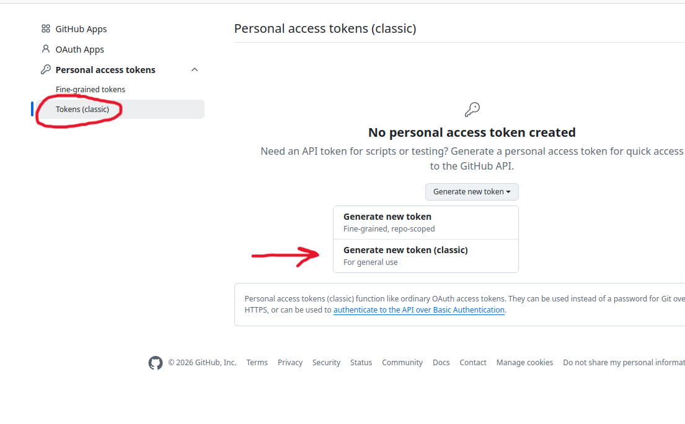
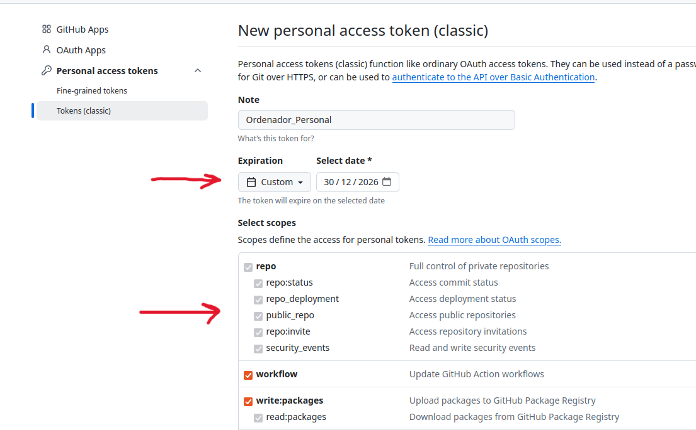
Ve a https://github.com/settings/tokens/new y genera un nuevo token con permisos de acceso a tu repositorio.
Cuando hagas push por primera vez, Git te pedirá autenticación. Usa tu token de acceso personal como contraseña.
Importante: Guarda tu token en un lugar seguro, no lo compartas con nadie.
Como se puede ver, en la captura de pantalla se muestra que puede ponerse una fecha concreta de expiración del token y además que permisos se obtienen con el mismo.
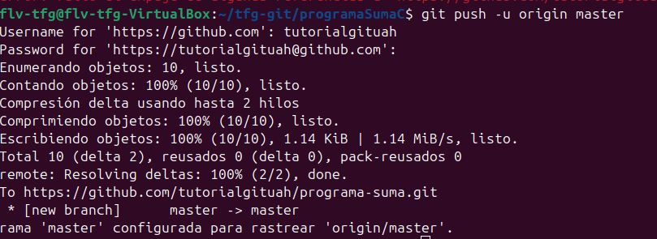
Ahora sube todos tus commits al servidor remoto:
git push -u origin main
Nota: En versiones antiguas de Git, la rama principal podría llamarse master en lugar de main. Si obtienes un error, intenta con:
git push -u origin master
Git te pedirá autenticación. Puedes usar:
Ve a tu repositorio en GitHub (https://github.com/tu-usuario/programa-suma) y verifica que todos tus archivos están allí:
Haz clic en la pestaña "Commits" para ver el historial de cambios que realizaste.
git init - Inicializó el repositoriogit status - Verificó el estado de los archivosgit add - Añadió archivos al Staging Areagit commit - Guardó cambios en el historialgit log - Vio el historial de commitsgit diff - Comparó cambios entre versiones.gitignore - Especificó qué archivos ignorarMakefile - Automatizó la compilación del proyectomake - Compiló el programa automáticamentemake clean - Limpió los archivos compiladosgit remote add - Conectó el repositorio local con GitHubgit remote -v - Verificó las conexiones remotasgit push - Subió los commits al servidor remoto